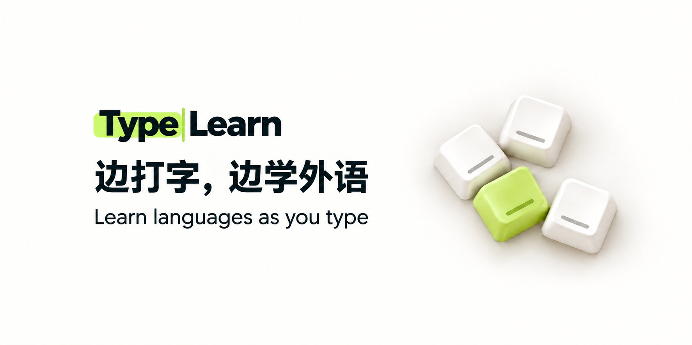
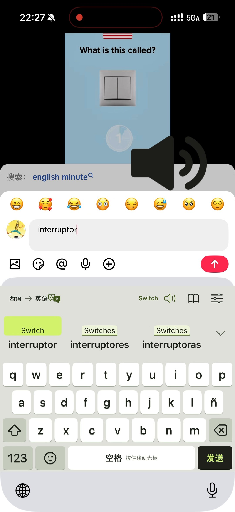

产品营销增长方案
TypeLearn
从产品定位到增长路径
围绕“边打字，边学外语”的产品价值，开展市场与竞品研究，规划内容、渠道与首轮需求验证。
- 明确目标用户与使用场景
- 市场定位
- 设计平台内容与账号分工
- 渠道策略
- 制定阶段实验和反馈口径
- 验证方案

从产品价值而非功能清单出发
把“键盘翻译”重新表达为“正在沟通时学习外语”。围绕真实消息回复、表达不自然等问题，整理目标用户、竞争方案、核心场景与差异化主张。
把内容、渠道和承接放在一起
研究 TikTok、Instagram、YouTube 等平台的内容结构，设计产品演示、场景内容和用户共创方向。根据当前西语用户学习英语的执行范围，统一内容语言、账号表达和首轮测试路径。
内容支柱
真实回复场景、产品演示、表达纠正，以及用户对权限与使用的疑问。
渠道分工
短视频负责理解与触达，社群和讨论负责收集具体需求，承接页负责测试意向。
首轮验证
通过具体场景反馈、产品理解和内测意向判断方向，配合Day 7与Day 30复盘。
让方案落到可制作的素材
形成增长方案、账号资料、内容排期与演示素材。把需求判断、内容表达和制作交付接起来，支持首轮内容测试。

展示为增长方案与制作交付，不将筹备中的测试写成已取得的用户增长。